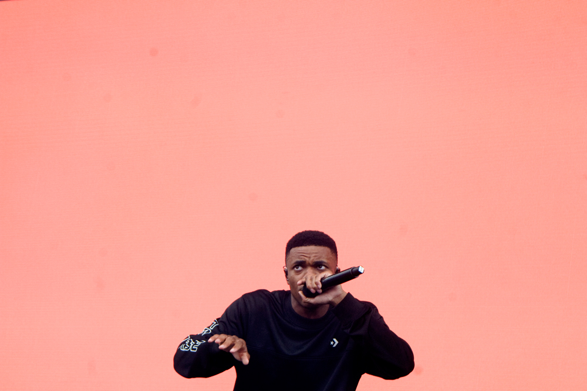
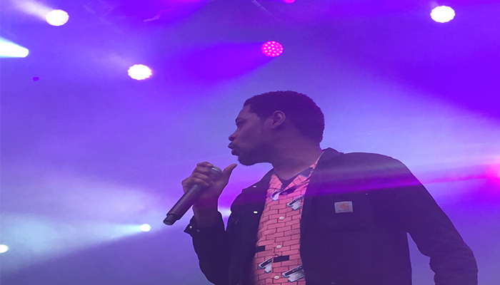
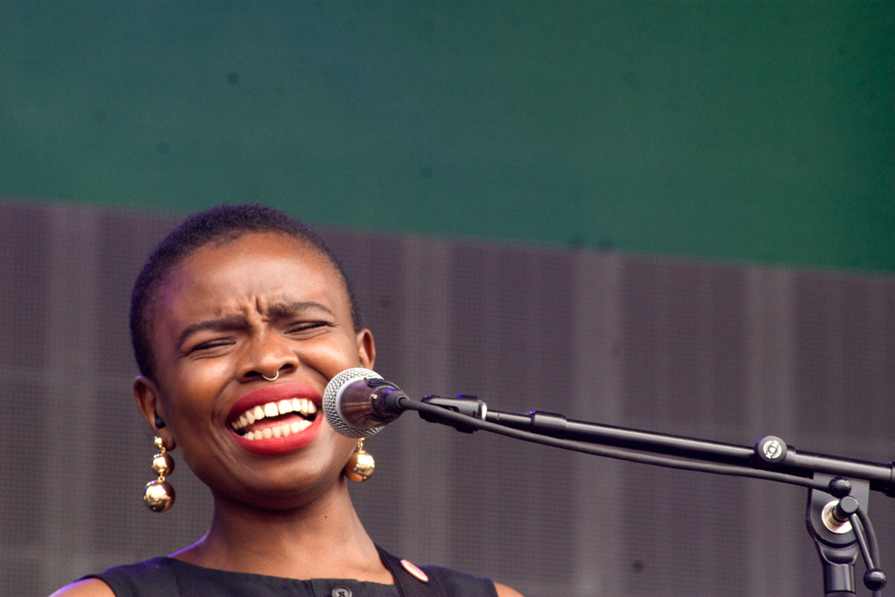
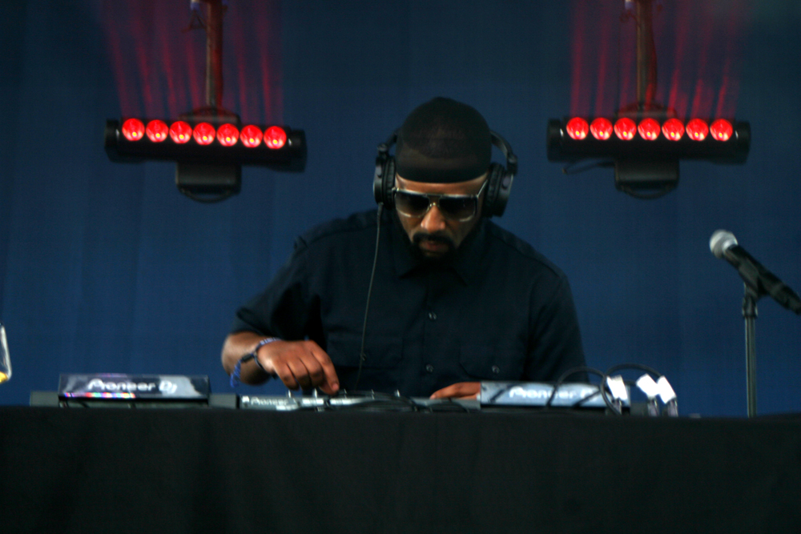
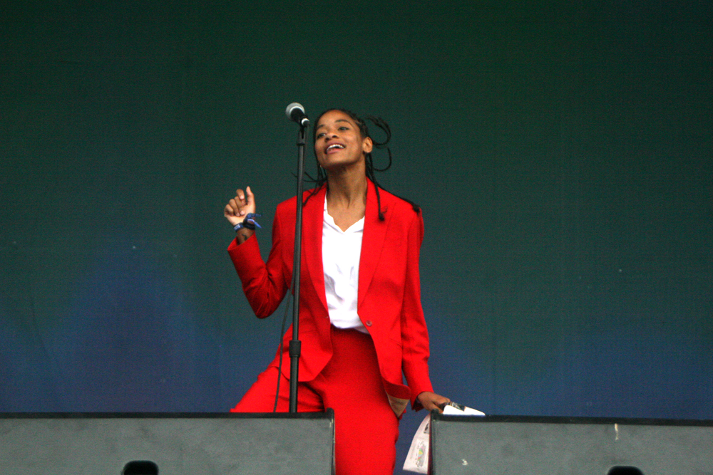
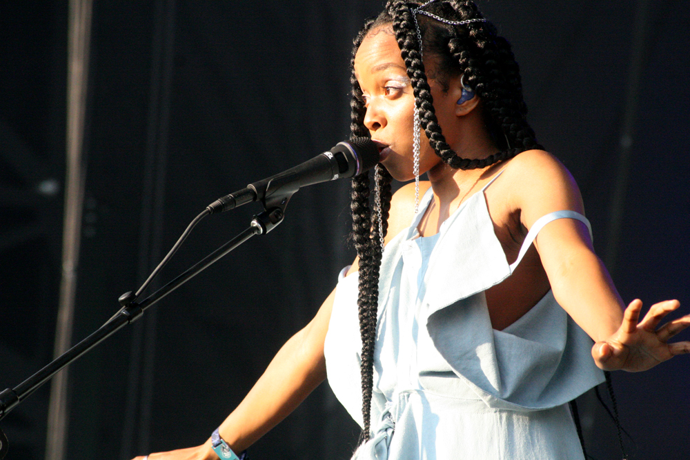
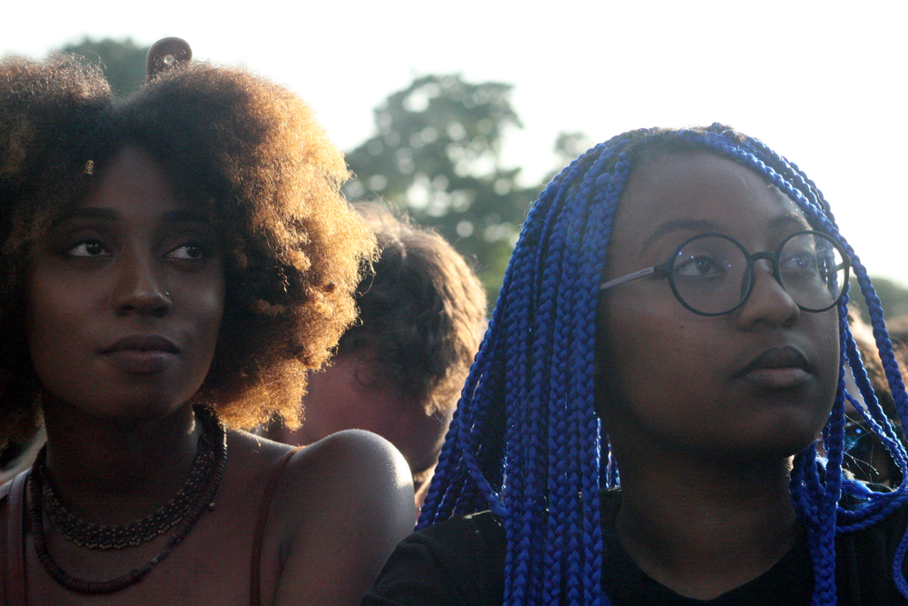
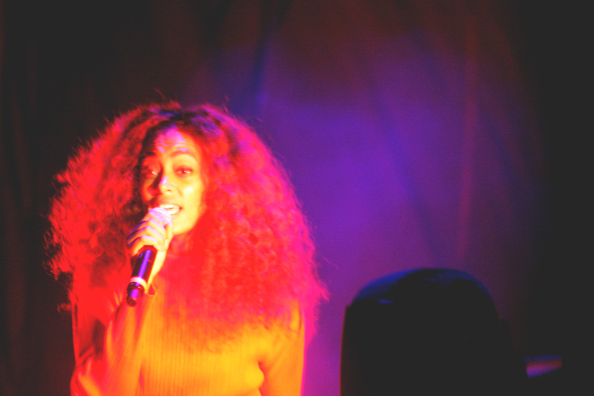
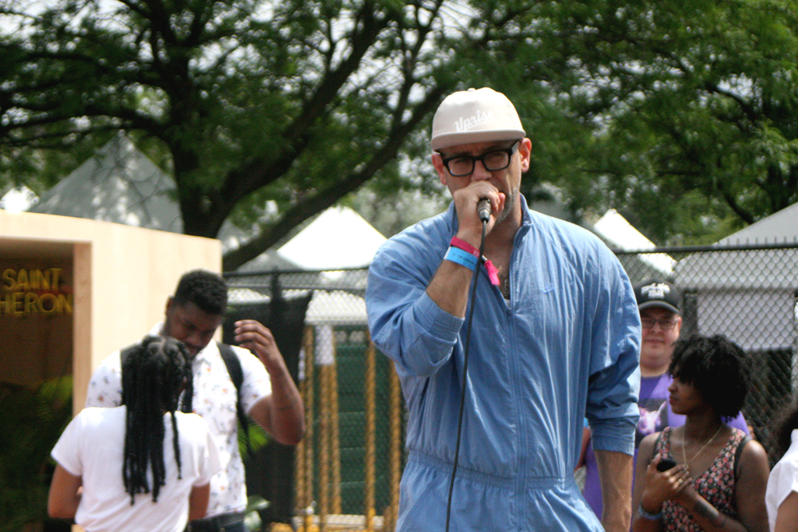
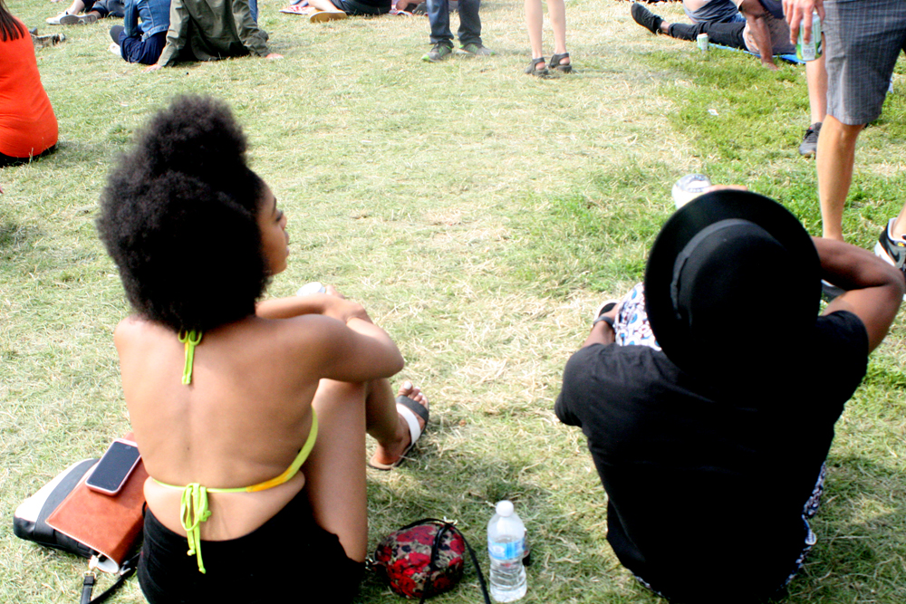

PITCHFORK REVIEW 2017: MEN AND WOMEN OF COLOR, AND POLITICS SHINE AT THE FOREFRONT OF MUSIC AND PERFORMANCES THIS YEAR
Many of us turn to music for many different reasons. Some of us turn to it as a way to distract ourselves from confronting the realities that we must face, while others use it as a meditative and therapeutic approach while working on something important, or other use it to turn up, but what they all have in common: it’s a method of escapism. We hypnotize ourselves for a 60-minute trance in which the only world we live in is the one being created by the artist we’re listening to.
Pitchfork, for the last eleven years, has had a long-standing tradition of recruiting emerging both young and seasoned artists, giving them a platform to visually display their talents to not only the festive-goers, but to everyone around the world watching them. With the current racial climate, constant images of black death, and the added political climate that’s been placed over the last months with this new administration it has been incredulously dark for many citizens in the United States. While many of us were pre-emptively elated to see a women take charge in the White House for the first time in our nation’s history, after eight years of having our first Black President in Barack Obama, there was a large portion of America that felt their voices were of a much larger bravado than ours, and they succeed in getting their man in the White House.
Over the course of the months since he’s taken office, there has been a titanic surge of bands and musicians outpouring their frustrations of the political and systematic oppression and using their art as a way to try and unload the weight of the world and sWhile this isn’t relatively new (think back to uprising of the 60’s and 70’s), festivals are known for bringing people from all walks of life together through a common love of music, and artists have always used the stage as a platform to speak to the masses. This year the artists at Pitchfork definitely made their statement loud and clear.
DAY ONE: MADME GHANDI, VINCE STAPLES, DANNY BROWN, KAMIYAH
When it comes to opening at a major music festival, there’s a certain level of heightened sensibility one must ascertain. You have to be able to sway with the crowd, contain an electric stage presence, and above all that: you have to leave your crowd hungry for more than what they expected. The openers for this year’s Pitchfork (Madame Gandhi, Vagabon, Kilo Kish) were successful in their efforts.

Madame Gandhi and her yellow ensemble, including an all-female band (dancers, DJ, vocalist, and percussionist) wasted no time in tackling the topics that centered on the issue of obtaining feminist empowerment. Part singer, part drummer, part rapper, part dancer, and full-bodied activist, it should come as no surprise that her performance was eclectic, as much as it was a political buckshot aimed at the toxic misogyny that continues to inherently bind us to a pastime that we do not want to relive. Lyrics such as “The Future is Female” or “the biggest threat is a girl with a book” re-enable a concept that Gloria Steinem often says: “Imagine a world in which we are linked and not ranked.” Midway through her set, she pulls out a notebook, and reads lines from “The Feminist Utopia Project,” using her socially conscious messages and empowering statements as a catalyst to challenge the systematic oppression that we face in the times of the present and of the future. It was refreshing to see this level of energy exuberated in the early hours of Day One and this pattern would continue to follow.

When it came to the rap performances for Day One, I was thoroughly surprised at Vince Staples, despite the stage malfunctions that may have hindered his performance. If there was anything to take away from his set, it was almost certain that his core fan base was not going to let him get dragged into being labeled a subpar performance. One thing about Vince Staples’ fans—they’ll bounce to anything and everything he’ll throw at them. His classic 2014 hit “Blue Suede” and “745” from his latest project Big Fish Theory were bumping throughout and his cadence didn’t seem to fail him.

Next up was Danny Brown, and placing him on the Green Stage was the perfect decision, in my opinion. His raspy rap vocals and lyrical wordplay, along with a booming trap-like beat spectrum in his arsenal, he was ready to bring the f**king house down. The thing that puts Danny Brown in the top tier of modern-coated rappers is his method of incorporating the hardcore/punk rock subgenre into his music. It was immediately known that Danny Brown’s presence was felt when his DJ started off played Black Sabbath’s “Iron Man”, just to get a quick feel of the crowd. Then, here comes Danny. He slowly approaches center stage, places his boot on one of the low platforms, and gestures the signs of the horn to his audience, then starting off with a banger in “Die Like A Rockstar”, which completely molds the epitome of him as an artist bridging the gaps between the two polarizing subgenres. I didn’t even know till about 10 minutes in, I looked at him and saw that he no longer has the long flowing hair or the chipped tooth. It’s been a minute since he dropped Atrocity Exhibition last September, so one can only hope that this new look of his will continue to push the precincts of rap to unknown boundaries.
Kamaiyah, in my opinion, certainly had the best performance of Day One. While her setlist only last for about 30 minutes, it was easy to get warped into her onstage presence only to realize that it ended just as quick as it had started. But despite all that, I got caught in the moment. Everything seemed to work in her favor—from the DJ giving us a pre-turn up ritual of “Humble,” the tone was already set for her, she just had to come out and do the damn thing. It certainly helped when she had her hype man come out and sway with the crowd. (Side note: whatever happened to those times when the hype man actually hyped up the crowd? Seems like those times have just vanished over the years). Her stage presence was glowing; there was never a momentous pause to let her audience breathe because she kept putting on bangers after bangers, with joints like “Build You Up,” “How Does It Feel?”, and “Fuck It Up.” One of my favorite soundbites to come out from this performance was the “Hootchie-Hoo” audio clip that had me dying of laughter. Kamaiyah really came into her own on Day One, and her trajectory can only get higher after this.
DAY TWO: VANGARD, MAD LIB, A TRIBE CALLED QUEST

After a successful Day One, I was looking forward to seeing Vagabon after hearing a lot of praise from their latest release Infinite Worlds. Laetitia Tamko (aka Vagabon) is a soft-spoken and semi-reserved Cameroonian from Brooklyn who, when playing with her bassist and drummer, encompasses a thundering vocal performance, giving a blistering boost of confidence to young black women who may feel a sense of isolation or abandonment of any sorts. Delivering what might be the best line I’ve heard all weekend: “I’m just a small fish/And you’re a shark that eats everything.” Throughout her set, she takes her time, saying “I am not a woman of many words,” making deliberate pauses to pull her audience into her world.

After a disappointing performance from George Clinton & P-Funk, I was looking forward to seeing the Blue Stage packed with a congregation of head-bopping, purist hip-hop connoisseurs waiting patiently for Madlib aka The Loop Digga aka Lord Quas. The crowd was all welcoming and inclusively transparent; there was even a patron who raised a cutout stick figure of Quasimoto near the front of the stage. I was interested to see what sort of style Madlib would project to the audience. He’s deeply rooted in a multitude of musical genres (Hip-Hop, Reggae, Bossanova, Jazz, etc.), so anything he would bring to the crowd would have some significance behind it. He wasted no time in catering to his day-one fans, delivering his collaborations with MF Doom, Erykah Badu, Lootpack, even some Mos Def. He paid homage to Prodigy by playing Mobb Deep’s “Shook Ones,” and even got some modern hypes into his mix, like “Mask Off” and “Bad & Boujee”. The only disappointment I had was the limit to which his time was given; Madlib is not the type of artist that can summarize his set in a 40-minute window. If anything, that’s when he would grasp onto the audience the most.
At 8:30pm, the Pitchfork crowd had galvanized into a unified front by the Green Stage, itching to see the traditional tri-color formula of red, black, and green. For Q-Tip, Jerobi, and Ali Shaheed, it must’ve been a strange feeling, knowing that Phife Dawg was no longer there to accompany them onstage; and it was hard for us fans as well. But Q-Tip’s charismatic stage presence was magnetic and uplifting, putting me in a world of nostalgia where I remembered walking down my block as a kid, and my neighbors would be blasting “Check The Rhyme” from their rooftop window. As silly as it sounds, it was such a historic moment that united fans of vintage old-school hip-hop heads and the modernists who might just be discovering this group at the moment. The set drew from all six of the group’s albums, along with Q-Tip’s solo hit “Vivrant Thing” and Consequence’s verse from Kanye West’s “Spaceship.” And the energy built gradually, starting with recent tracks and deep cuts and building toward the undeniable, foundational classics. I left that night with a huge smile on my face, knowing that despite Phife not being with us anymore, Tribe will continue to do extraordinary things for the genre of hip-hop.
DAY THREE: KILO KISH, JAMILA WOODS, SOLANGE,
If there were ever a day to possess the definition of being unapologetically black, Sunday was the day for it. As soon as I walked into Union Park, I saw a significantly larger amount of black men and women; all beautifully draped in Black Girl Magic and Black Boy Joy, all prepping for the opportunity to see some of the greatest black performers Pitchfork’s had to offer through one night. Kilo Kish, Isaiah Rashad, Jamila Woods, and the headliner Solange all in the same day. For me and for many others, this was set to become a moment of authentic black celebration.

Kilo Kish graced us with a strikingly theatrical and stimulating performance, channeling the exact amount of concentration and thought on her stage presence as she does to her music. A slowly stride to the stage, she arrives onstage clad in a red business suit, perusing through the crowd with a glance of confusion in her eyes. Like she had just landed on a foreign planet. There’s a chair center-stage, and she sits on it. She picks up a New Yorker and starts to read, the festive watchers sweating at the idea of what her next move is. As her set transitions into one of her more bubbly songs “Hello, Lakisha,” she doesn’t limit herself to just her vocals, but rather she fervently swings her arms and upper body in an aggressive, choreograph-focused approach. It’s an interesting dichotomy to her more bouncy and lightly sarcastic songs. She proceeds to incorporate a variety of props in her performance (a suitcase and a red telephone) before she ultimately destroys them in which, at one point, she almost knocked the DJ’s head off (Yep, I caught that. But he seemed chill about it though). That being said, Kilo Kish is a mystifier; a perplexing and blurring performance artist who continues to break the traditional archetypes of the modern R&B musician. Her music is a representative of the millennial generation, and her performance at Pitchfork certainly mirrors that as such.

Jamila Woods could not have been the perfect precursor to get us ready for Solange’s performance. However, that’s not to say that Jamila wasn’t able to successfully hone under the larger stage. Due to an unfortunate cancellation from The Avalanches, that opened up the window for Jamila Woods to transition from the more enclosed and intimate Blue Stage to the larger Green Stage, and she took that opportunity and delivered an unforgettable presentation. While she may have lost some level of intimacy, she gained the larger crowd and audience that she unquestionably deserves. With the harmonies of her three backing singers, her soothingly soft voice contained a level of heaviness that was filled with layers of soulful drum breaks, jazz-infected bass lines, and Jamila’s spoken word poetry. It was a mesmerizing refresher that the term “Black Girl Magic” is more than just a simple hashtag, but rather it is an embodiment that reflects on the underlying confidence and multifariousness of black women worldwide.

As much as we hate to admit it, none of us were ready for Solange. No matter how many times we would re-loop A Seat at the Table in our quiet bedrooms just to calibrate some level of ambiance, it certainly did not match on the calibration of seeing her perform live. Many of the patrons at Pitchfork sacrificed empty bellies and weak knees, sifting through performance after performance, just to get a front-row sight of being within a few feet of the front stage. That’s the level of dedication that Solange’s presence had amongst black people, in particular to black women. The stage shifts colors to an immensely deep bi-coloration of Red and Orange, as her band members start to set the mood with an extended medley of “Rise,” followed by her dancers, and then, finally…Solange.

Her onstage presence was not only gratifying, but contained a level of catharsis that left everyone spellbound to her. With every swing in her voice and every choreographed move in her stride, I saw the joyous tears of the young black women surrounding me; while some of which had never met each other before the show, they felt a strong sense of comfort with one another; a vigorous sisterhood that, for the remainder of the show, would not be broken by outside forces. She then continued into “F.U.B.U.”, an inherently Black Anthem that is a divine representation of Black culture that is strictly for us. I can’t tell you how many times I’ve been in situations where Jay-Z and Kanye’s “N**gas in Paris” would come on at parties and everyone, including people not of color, would say that verbatim. The level of black energy and excellence that was exuberated throughout Union Park was so captivating that I had nearly forgotten where I was. Perhaps that was her mission all along; to have us disregard the daily micro-aggressions that surround us on a daily basis, only to come together in a unifying front. And it worked, too! Her performance left me in a state of exultation that made me proud to be black, to be unashamed, to exuberate all the things that are attached with being so.

I’d be remiss if I failed to mention the Young Chicago Authors and its artistic director Kevin Coval, who have become a pioneering force in instilling the confidence for young Chicagoans to document their daily lives in their own words. It was exhilarating to see many people coming together to observe the readings from Kevin Coval, Nate Marshall, Sofia Elhillo, Fatimah Asghar, and the countless others whom I had unfortunately missed from the start. With all the white noise that had surrounded the festival throughout, there was a thick and calm muteness that had filled the park; the only voices being heard were the ones grabbing the microphone and spilling their words from the pages in their journals; passages reciting the continual struggle of black bodies being disproportionately targeted by the white dominant society.

In retrospect, this year’s Pitchfork Festival served as a momentous reminder that, while the current political system continues to denigrate and dehumanize our POC brothers and sisters, it is extremely imperative that we must encourage people who are invested in healing ourselves and transforming the culture to take it a step further: If we want to win, it’s inherently important not just to be black, but to be black with a designated purpose.
TO HEAR MORE OF THE ARTISTS, CHECK OUT OUR PITCHFORK PLAYLIST BELOW!